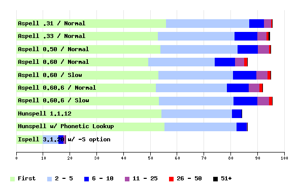

| Score | Total Not Found | Total Found | First | 1 - 5 | 1 - 10 | 1 - 25 | 1 - 50 | Any | |
|---|---|---|---|---|---|---|---|---|---|
| Aspell .31 / Normal | 95.7 | 30 | 668 | 56.0 | 87.1 | 92.6 | 95.3 | 95.7 | 95.7 |
| Aspell .33 / Normal | 94.4 | 39 | 659 | 52.9 | 81.5 | 90.0 | 93.3 | 94.1 | 94.4 |
| Aspell 0.50 / Normal | 95.0 | 35 | 663 | 53.9 | 82.7 | 90.3 | 94.4 | 94.8 | 95.0 |
| Aspell 0.60 / Normal | 86.2 | 96 | 602 | 49.3 | 74.1 | 81.7 | 85.1 | 86.2 | 86.2 |
| Aspell 0.60 / Slow | 95.0 | 35 | 663 | 53.2 | 80.8 | 89.5 | 93.8 | 95.0 | 95.0 |
| Aspell 0.60.6 / Normal | 92.0 | 56 | 642 | 52.1 | 78.8 | 87.0 | 90.8 | 92.0 | 92.0 |
| Aspell 0.60.6 / Slow | 95.6 | 31 | 667 | 53.3 | 81.2 | 90.1 | 94.4 | 95.6 | 95.6 |
| Hunspell 1.1.12 | 84.2 | 110 | 588 | 54.3 | 80.5 | 84.1 | 84.2 | 84.2 | 84.2 |
| Hunspell w/ Phonetic Lookup | 86.2 | 96 | 602 | 55.4 | 82.2 | 86.1 | 86.2 | 86.2 | 86.2 |
| Ispell 3.1.20 w/ -S option | 18.3 | 570 | 128 | 9.9 | 15.9 | 17.8 | 18.3 | 18.3 | 18.3 |
The Score is: (Total Found)/(Total)*100
First is: (Total Found First On List)/(Total)*100,
1-5 is: (Total Found 1st - 5th)/(Total)*100, etc...

Graph created with Ploticus
| Min | 5% | 25% | 50% | 75% | 95% | Max | |
|---|---|---|---|---|---|---|---|
| Aspell .31 / Normal | 2 | 3 | 7 | 12 | 19 | 43 | 100 |
| Aspell .33 / Normal | 3 | 4 | 7 | 12 | 18 | 39 | 84 |
| Aspell 0.50 / Normal | 1 | 4 | 7 | 12 | 18 | 39 | 78 |
| Aspell 0.60 / Normal | 1 | 4 | 6 | 11 | 22 | 53 | 100 |
| Aspell 0.60 / Slow | 3 | 4 | 8 | 14 | 25 | 62 | 100 |
| Aspell 0.60.6 / Normal | 1 | 4 | 6 | 11 | 21 | 49 | 98 |
| Aspell 0.60.6 / Slow | 2 | 4 | 8 | 13 | 24 | 56 | 100 |
| Hunspell 1.1.12 | 1 | 1 | 4 | 4 | 5 | 13 | 15 |
| Hunspell w/ Phonetic Lookup | 1 | 1 | 6 | 6 | 7 | 13 | 15 |
| Ispell 3.1.20 w/ -S option | 0 | 0 | 0 | 0 | 2 | 12 | 26 |
| Aspell .31 / Normal | 4.35 |
| Aspell .33 / Normal | 34.49 |
| Aspell 0.50 / Normal | 28.18 |
| Aspell 0.60 / Normal | 0.88 |
| Aspell 0.60 / Slow | 5.90 |
| Aspell 0.60.6 / Normal | 1.55 |
| Aspell 0.60.6 / Slow | 6.38 |
| Hunspell 1.1.12 | 38.29 |
| Hunspell w/ Phonetic Lookup | 67.93 |
| Ispell 3.1.20 w/ -S option | 0.24 |
The test data used here is a list of common misspelling provided by Wikipedia, but filtered to remove the easy cases as defined by ones Ispell can get and are also within the first 5 words suggested in all the other tests.